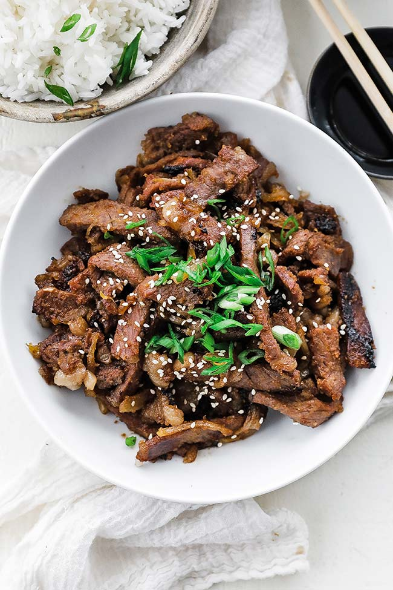

Ingredients
- 1 ½ pounds boneless rib eye steak
- ½ small pear, peeled and coarsely grated
- ¼ cup reduced sodium soy sauce
- 2 tablespoons brown sugar
- 2 tablespoons toasted sesame oil
- 3 cloves garlic, minced
- 1 tablespoon freshly grated ginger
- 1 tablespoon gochujang (Korean red pepper paste)
- 2 tablespoons vegetable oil, divided
- 2 green onions, thinly sliced
- 1 teaspoon toasted sesame seeds
Instructions
- Wrap steak in plastic wrap and place in freezer for 30 minutes. Slice across the grain into 1/4-inch thick slices.
- In a medium bowl, combine pear, soy sauce, brown sugar, sesame oil, garlic, ginger, and gochujang.
- Place steak and marinade into a large Ziploc bag; refrigerate for at least 2 hours or overnight.
- Heat 1 tablespoon vegetable oil in a grill pan over medium-high heat. Cook steak in batches, 2–3 minutes per side, until charred and cooked through. Repeat with remaining oil and steak.
- Serve immediately, garnished with green onions and sesame seeds.